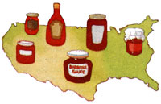
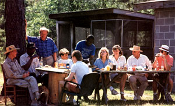
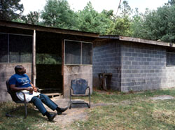
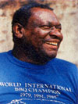
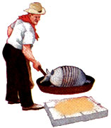
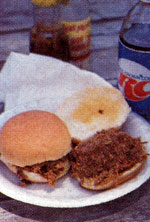
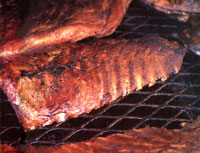
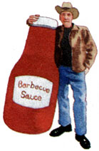

According to the archaeological evidence, human beings have been cooking meat over hot coals for half a million years. Before we baked, boiled, fried or broiled, we barbecued.
After 500,000 years, people tend to become set in their ways. Although Americans share a love of good barbecue, they feud over what to cook, how to cook it, how to season it, how (or whether) to sauce it and what to serve with it. The differences from region to region and from cook to cook may be major or minor, but they are always considered vital and worth defending at length. An Arizonian and an Alabamian may think as one about God, sex and the Democratic party; they will disagree about barbecue.
Some differences clearly evolved because of a diversity of available resources. The wood that provides the "proper" smoke flavor generally grows in the surrounding forests; the meat that "belongs" on the grill has probably been the mainstay of local farmers for generations; the "right" sauce varies with regional vegetables and ethnic traditions. But even a cursory survey of American barbecue suggests that other quirks result from nothing more than people's relentless, cantankerous, joyous determination to do things their own way.
The South
"Somebody who thinks barbecue is beef is not a Southerner. (Texans think barbecue is beef.) Somebody who thinks of barbecue in terms of ribs only is not a Southerner, either. (This person is probably from the Midwest and wears rubbers on his or her shoes.) But somebody who knows damn well barbecue is pork and the best way to eat it is sliced or chopped and put inside two pieces of bread is damn well a Southerner."
- Lewis Grizzard
Long before Europeans set foot on the North American continent, southeastern Indians cooked fish and game over hot coals on a frame they constructed of green wood. The early Spanish explorers called the framework barbacoa, which eventually became barbecue.
Blessed with a warm climate that made outdoor gatherings possible for much of the year, the early colonists quickly made barbecues a part of their culture; in the late 1600s, the founding fathers of Virginia felt constrained to pass a law banning the discharge of firearms at barbecues. By the 1700s, barbecues were one of the most common forms of political and social gathering. (It took politicians no time at all to figure out that citizens who declined to show up for rhetoric would turn out for roast pork.) Slaves or servants did much of the hot and heavy work, and when barbecue restaurants sprang up all over the South in the 1920s, most of them were in black communities.
Georgia, Alabama and Tennessee developed what is generally thought of as Southern barbecue-pork cooked in an open pit and flavored with a tomato-based sauce (which provided the model for most commercial brands). At church picnics and family reunions, it's still done the old way. In preparation, a good "pit man" builds a large fire in a 55-gallon drum, usually of hickory, a fine, slow-burning, fragrant-smoking hardwood common across the South. In the absence of hickory, the plentiful Southern oak suffices, perhaps mixed with peach or pecan. While the fire burns down, he digs a hole about two feet deep, and wide and long enough to accommodate the meat. He lays metal rods across the pit at ground level and covers them with heavy wire mesh, leaving some space around the edges. When the fire has burned down, he shovels the hot coals into the pit. Finally, the pork-shoulders or a whole hog-is placed on the rack, covered loosely and cooked slowly. It takes all night-10 to 14 hours-to cook a shoulder correctly, even longer (up to 20 hours) for a whole hog. Since the coals must not flame up and scorch the meat, a separate fire burns to one side, providing a constant supply of coals.
When pit barbecue moved into restaurants (and into the jurisdiction of health departments), pits were raised to waist level (becoming easier to operate) and built of brick or cinder block (becoming cleaner).
The sauce of the inland South makes use of ingredients that have long been abundant there: tomatoes (in the form of puree, sauce or ketchup), molasses or cane sugar, and hot pepper sauce, with vinegar and mustard for seasoning. It's used primarily as a table sauce. If the meat is basted at all while cooking, it's only during the last 20 or 30 minutes, since the tomatoes and sugar will burn and blacken quickly in the heat.
These days, Alabama barbecue is likely to come with white bread and beer and nothing else. In Tennessee, the meat keeps company with coleslaw moistened with a sweet, mayonnaise-vinegar dressing. In Georgia, the typical accompaniment is Brunswick stew, a hunter's dish that used to be made of wild game and vegetables but is now usually based on chicken and beef (with maybe a squirrel thrown in, if there's one handy).
The Carolinas point up the folly of generalizing about an entire state, much less a region. North Carolina is implacably divided into east and west of Raleigh, the state capital. Eastern barbecue is open-pit whole hog, basted frequently with a sauce that consists entirely of vinegar and hot peppers. The meat is then chopped and served unsauced on a hamburger bun, with vinegary slaw and hush puppies (a carry-over from the seafood dinners of the coast) on the side. West of Raleigh, barbecue is pork shoulder, pulled or chopped, coated with a thin, mild-to-hot sauce that is mostly vinegar and pepper but does contain some tomato. The meat is topped with a slaw made with the same red sauce and served on a white roll.
The differences may seem minuscule to some, but they loom large in the Tar Heel State. A few years ago, a well-meaning couple from "down east" opened a restaurant in the western mountains and began to serve barbecue as they understood it. Most customers came just once. As the business was about to go under, a kindly mountaineer took the couple aside and pointed out that he didn't know what the Sam Hill they were serving but it certainly wasn't barbecue and that was what they advertised wasn't it? Chastened, the proprietors printed a public confession of error in the local paper and promised to serve western barbecue henceforward. Business improved overnight.
South Carolina is even more complicated. For five months, Allie Wall and Ron Layne crisscrossed the state in pursuit of barbecue. After prodigious research (published in Hog Heaven), they identified six geographic districts, with six distinct sauces: mustard, vinegar, tomato, mustard/vinegar, mustard/ ketchup and mustard/vinegar/ketchup. (There may be a seventh. Toward the end, Wall and Layne heard rumors of chili sauce up around Spartanburg, but nerve and energy failed.)
The mustard-based sauce that dominates the central part of the state is the most unusual and thus the most hotly defended. "Most people who think they like barbecue have never even tasted it," mused one loyalist sadly. "Bless their poor hearts, they think barbecue sauce is red. When all the time it's yellow." Whatever the sauce, South Carolina barbecue is slow-cooked pork, often served with rice and liver hash, a soupy stew made from the "waste" parts of the pig, such as the liver and jowls.
An exception to the Southern pork rule is western Kentucky, famous for its mutton barbecues, which have been held around Owensboro since the 1830s. Although everyone gets in on the act, the tradition has been maintained primarily by the Catholic parishes. No one knows exactly why. ("Barbecue takes teamwork," suggested one poker-faced native, "and there's too much free will among Protestants to do it right.") The mutton is slow-cooked and served sliced or chopped with no sauce at all or a tangy, tomato-based one.
The West
"In my youth, a skilled barbecue cook in the average Southwestern community occupied a position far above that of the town mayor."
- Mel Marshall
In the wide open spaces of the old American West, when people came to visit they stayed awhile. Saddled with guests who had traveled long, hungry distances by horseback and who intended to stick around for a fair number of meals, hosts needed to cook up something substantial-say, a steer. Barbecues became Texans' way of celebrating everything from weddings to elections to the 4th of July.
Two groups were especially important to the tradition. The Germans who settled in the Hill Country of central Texas brought a rich tradition of marinated and smoked meats; in the southern and eastern parts of the state, Mexicans contributed fiery seasonings and sauces. As the cattle drives headed west and north into other states, Texans took along their favorite form of cooking.
Not surprisingly in a state crowded with cattle, Texas barbecue is beef, especially brisket. Unlike Southeasterners, Texans like to cook in closed pits. The wood may be any thing available, but given a choice, Texans burn mesquite, a hot-burning, smoky wood. (Once a waste tree and the bane of Southwestern ranchers, mesquite is now exported to restaurants and markets from Manhattan to Berkeley.) Another popular fuel is pecan, the state tree, which imparts a delicate, spicy flavor. After the pit is dug and the wood has burned down to hot coals, the meat is placed at the opposite end of the trench from the fire, the hole covered with sheets of tin, and dirt shoveled over that. The brisket, not a terribly tender cut, cooks slowly for 14 to 18 hours. Like other things Texan, barbecues can be larger than life. In Dumas, a small town on the panhandle that serves up 7,000 plates of barbecue at its annual summer festival, they dig the cooked meat out with a backhoe.
When it comes to seasoning, there are deep schisms among the Texas faithful. To some, putting anything other than a knife and fork on a brisket is sacrilege. Since a smoky, slowcooked piece of beef is as close to perfection as we are going to get on this earth, they reason, corrupting it with lesser flavors is a sin. Others can countenance a dry rub-equal parts salt, pepper and paprika, for example, rubbed into the meat before it's cooked-or even a modest marinade (say, a mixture of oil, beer and lemon). Some freethinkers serve sauces at the table: anything from broth/steak sauce/chili powder concoctions to thick, sweet-tangy, ketchup-and-vinegar brews. (It is widely believed, or at least hoped, that they suffer frequent crises of conscience.) About accompaniments there is complete harmony; barbecue comes with beans.
Farther west, in Arizona and New Mexico, barbecuers lean toward pork ribs. Sauces resemble the salsa for which the region is famous: finely chopped tomatoes and onions enlivened with the wonderful spices of the Southwest, cumin and the everpresent chili peppers in all their varieties. Typical accompaniments are tortillas, beans and fresh salsa. Californians frequently round out the meal with sourdough bread.
The Pacific Northwest has an older tradition. When Europeans first explored the area, they found Indians cooking fresh salmon on willow-reed grills that held the fish upright beside alderwood fires, so that the fish cooked slowly in the heat of the smoke, retaining their fat and moisture. It's still possible to attend Indian-style salmon bakes in places like Sequim, Washington, and Depoe Bay, Oregon.
The Midwest
"The best restaurants in the world are, of course, in Kansas City. Not all of them; only the top four or five."
- Calvin Trillin
Barbecue is a well-established tradition throughout the Midwest. At a single 1850 feast, Kansans cooked and ate six steers, 20 hogs and more than 50 sheep, pigs and lambs. Today, cook-offs and festivals are held as far north as Chicago. But when many people think of Midwest barbecue, they think of Kansas City.
Kansas City has a good 70 barbecue restaurants to service its population of one and a half million and the legions of visitors who travel there partly to pig out. Through the impassioned propaganda of Calvin Trillin, a homesick native who lives and writes in New York City, KC has become a barbecue mecca.
The man who started it all was Henry Perry, a black entrepreneur who dug a pit in an abandoned streetcar barn and began selling slabs of meat wrapped in newspaper to make ends meet. Barbecue remained popular largely in the black community until after World War II, when the popularity of back-yard grills helped white folks notice the splendid food that was cooking around town. The best-known barbecue restaurants in the city-e.g., the legendary Arthur Bryant's-are still black owned and operated.
KC boasts an eclectic barbecue, obviously influenced by the South and West; it serves primarily pork ribs and beef brisket. Like most other enthusiasts, KC cooks take their time-a minimum of eight hours over hickory coals for a beef brisket, with many a superior one smoldering for 10 to 20 hours. KC barbecuers believe in dry rubs, made up according to the whims of the individual cook but usually consisting of salt, paprika and brown sugar; other popular ingredients include garlic powder, pepper, cayenne and dry mustard. The sauces vary widely, but are typically tomato-based, sweet and spicy with such Middle American seasonings as paprika, sage and thyme. Popular accompaniments include fries, beans and slaw.
The East
Some Texans say you can't barbecue a chicken, but then some Texans eat armadillo, which makes it hard to take their opinions seriously.
-Delaware chicken cook
Perhaps because the long, cold winters make outdoor cooking a short-term pleasure, barbecuing is less of an obsession in the Northeast than in other parts of the country. When Northeasterners do grill, they're partial to maple and corncobs for fuel, a combination that imparts a fine flavor to some Vermont hams and Canadian bacon. In some parts of New England, a whole turkey slowcooked over applewood is an autumn tradition, and one of the finest foods to come off a kettle grill. Inevitably, there are marinades and bastes that include maple syrup.
Farther down the Atlantic seaboard, barbecuing has taken firmer root. The Delmarva Peninsula, which includes most of Delaware and parts of Maryland and Virginia (hence the name), has two good reasons to barbecue: It's the fourth largest chickenproducing area in the U.S., and it has splendid beaches.
Every summer, vacationers stream out of Baltimore, Philadelphia and Washington, D.C., and head down the peninsula to the ocean. And every summer, Delmarva Lions and Kiwanians and Civitans throw together plywood stands beside the highways, light their fires and finance their next year's activities by selling chickens, barbecued over charcoal for a mere hour and a half and basted with a sauce containing oil and vinegar, an egg for body, and poultry seasoning.
Back-yard Barbecue
"Patience. You've got to have it. If you don't have it, you better get it."
-Texas barbecue man
Traditional barbecues have never been int imate events. Each year, at dozens of festivals and cook-offs across the country, tens of thousands of people eat tons of meat that has cooked a day and a half. But even if you don't have 20 hours to spend on dinner or a six-foot pit in your side yard or enough guests for a whole hog, you can adapt those large-scale techniques to the back-yard grill.
Of course, grilling and barbecuing aren't the same thing. Grilled meats-hot dogs, hamburgers, steaks-are seared fast over high heat to seal in the juices and then cooked relatively quickly over direct heat. Barbecued meats are slow-cooked over low and indirect heat, cooked more by the smoke than the coals. Good barbecue requires just a few tips and techniques, plus several hours to hang around the house.
Covered grill: An open grill works well for hot dogs, but a covered one helps regulate the low, slow fire needed for barbecuing, and gives the meat a smokier taste.
Charcoal briquettes: Although people have been cooking over charcoal since someone first relit a half-charred log, it took Henry Ford to bring us the briquette. Distressed that his wood alcohol distillation plant was producing huge piles of apparently useless charcoal as a by-product, he turned to his friend Thomas Edison for help. Edison designed the machinery; and, beginning in 1921, Ford manufactured and sold briquettes first to foundries, then to hotels and restaurants, then, in the super-domestic '50s, to outdoor cooks who wanted to keep the home fires burning. For barbecuers, briquettes' great advantage is that they make it possible to maintain a small, cool fire for hours.
Most briquettes are a mixture of hardwood charcoal (wood that burns incompletely in the presence of little or no oxygen), anthracite coal and starch or petroleum binders; some contain lighting ingredients. Brands vary in quality. Some put out smoke that smells of hardwood, and others reek of chemicals. Perhaps the wisest course is to try small bags of various brands in order to select the best.
Wood: Although charcoal provides the base fire, wood supplies the flavor of real barbecue. While chips are good for grilling (they smoke well for short periods of time), serious barbecuing requires larger chunks, or even small pieces, of wood. Use whatever hardwood is available-hickory left over from last winter's fires, prunings from the fruit trees. (If purchased wood chips are your only option, simply add them more often.) Never use pine or other resinous softwoods; they impart a bitter, piney taste.
The fire: Soak the wood chunks in water for at least an hour; their function is to smoke, not burn. Build a fire in the grill, using 12 to 24 briquettes, and let them burn down until they're covered with thick gray ash and you can hold your hand near them for five or six seconds. (The coals should be ready in 30 to 40 minutes.) Your goal is a cool fire-175° to 225°F. When the coals are ready, move half to one side of the grill and half to the other, and place a metal or foil pan in the middle; or move all the coals to one side and place the pan on the other. (The idea is to get the meat and the coals as far apart as the grill allows.) The pan will catch the fat and any basting sauce that drips off the meat, both of which can cause the fire to flame up. (The drippings can also be used for basting.) Drain the wood chunks well, and put them on the coals, place the grill as high above the coals as possible, and put the meat on to cook.
If the fire burns too low during cooking, start some more briquettes in a separate container, let them burn until ashy, then add them to the grill. Throughout the process, keep a spray bottle of water handy to douse any flames that threaten to scorch your dinner.
The meat: Whatever you're barbecuing, bring it to room temperature before putting it on the grill. Don't trim off the fat (except for any huge chunks barely attached); during the long, slow cooking process, it will moisten and flavor the meat. Much of it will cook off, and the rest can be trimmed before serving.
Season the meat if you want to. After it comes of the smoky fire, it will have lots of flavor of its own, and many addicts prefer it plain. Others choose from several options. Dry rubs are patted into the meat before it's cooked. The components vary with the cook: salt (some swear that salt dries and toughens the meat, but most dry rubs contain it), brown sugar, paprika, pepper, chili powder, dry mustard, etc. Marinades are liquids in which the meat soaks before cooking, from an hour to overnight. In addition to flavorings, some marinades contain an acid for tenderizing (vinegar, lemon juice) and, since acids are drying, an oil for moisturizing. Basting sauces (or sops) are brushed on the meat as it cooks, to flavor it and to keep it from drying out. Table sauces are served with 1988 the meat, and are sometimes used as bastes during the last 20 or 30 minutes of cooking.
Cooking: Barbecue the meat fat-side-up. A beef brisket should cook for about eight hours, as should a Boston butt (the upper portion of a pork shoulder). The cooking time will vary with the size of the cut and the heat of the day; it will go faster with hot summer sun beating down on the grill's metal cover, more slowly on a cool fall day.
Ribs should be done in four to six hours. If you're cooking several racks of ribs, stack them one on top of another, and rotate them during cooking (put the bottom slab on the top). During the last 30 minutes of cooking, turn the ribs fat-side-down, and baste them with the sauce of your choice.
Recipes
Asking a barbecue man for his sauce
recipe is like asking
to borrow his wife.
-Georgia barbecue man
In fact, there are as many varieties of barbecue as there are barbecue cooks, every one of whom will make two claims about his or her sauce: It's the best in the world, and you'll never figure out what's in it. So anyone who claims to have recipes that are typical of anything at all, or even particularly good, is in for some very hard times.
These aren't bad.
3/4 cup water
3 tablespoons minced onion
1 clove garlic, minced
1 cup prepared ball-park mustard
1 teaspoon dry mustard
3 tablespoons ketchup
4 tablespoons sugar
1 tablespoon honey
1 teaspoon Worcestershire sauce
2 teaspoons soy sauce
1/4 teaspoon black pepper
1/2 teaspoon cayenne pepper
Combine all ingredients in saucepan, bring to boil, reduce heat, and simmer 15 minutes. Cool to room temperature.
8 tablespoons butter
1 cup bourbon
1 cup beef bouillon
2 tablespoons Worcestershire sauce
1/4 cup lemon juice
1 tablespoon dry mustard
2 tablespoons chili powder
1 /2 teaspoon cayenne pepper
2 tablespoons sugar
1 bay leaf, crushed
3 cloves garlic, minced fine
1 large onion, minced fine
1-3 jalapeno peppers, minced fine, or to taste
Black pepper to taste
Melt butter in a large saucepan over medium heat. Stir in bourbon, bouillon, Worcestershire and lemon juice. Mix together mustard, chili powder, cayenne and sugar. Stir into liquid. Add bay leaf. Bring to simmer. Add garlic, onion and jalapeno peppers. Simmer, uncovered, 15 minutes. Add black pepper to taste.
Editor's Note: For directions on preparing your own homemade ketchup, mustard, salsa, etc., turn to page 30.
|
 MOTHER EARTH NEWS STAFF Barbecue is a touchy subject all over the country. |
 MOTHER EARTH NEWS STAFF Patrons of Louis Osteen's Pawleys Island Inn gather in front of George Young's YumYoung and Son's, a noted South Carolina barbecue house. |
 MOTHER EARTH NEWS STAFF George Young, once a valet for the Vanderbilt family, was given the land his restaurant stands on after George Vanderbilt died. |
|
 MOTHER EARTH NEWS STAFF Some Texans say you can't barbecue a chicken, but then some Texans eat armadillo, which makes it hard to take their opinions seriously. |
 MOTHER EARTH NEWS STAFF Whether it's a simple pork sandwich or a rack of ribs, barbecue is the stuff of summer feasts. |
 |
|
 |
 |
|